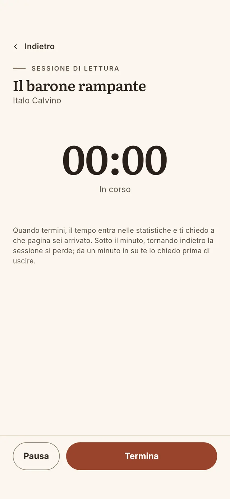

Promemoria di lettura
Lettavia ti ricorda di leggere con notifiche di promemoria.
Diario di lettura per iPhone
Un posto calmo dove seguire ogni libro: pagine, tempo, note e statistiche dell'anno.


In lettura
La schermata In lettura mette al centro il libro attivo, con l'avanzamento per pagine o per percentuale e il pulsante «Aggiorna lettura» a portata di pollice.

Libreria e aggiunta dei libri
La libreria raccoglie tutti i libri, in vista a lista o a griglia, con ricerca e filtri per stato: Da leggere, In lettura, Letti, Abbandonati.

Progressi
Le statistiche dell'anno mostrano a che punto è l'obiettivo, quali libri sono stati conclusi e come si distribuiscono le letture per genere, con una cronologia da sfogliare.
Note e backup
Ogni libro ha la sua scheda: note private, voto, date di inizio e fine e lo storico delle riletture. Tutto può essere esportato e salvato in un backup.


E ancora
Lettavia ti ricorda di leggere con notifiche di promemoria.
Un widget per la schermata Home di iPhone tiene la lettura a portata di sguardo.
La fotocamera legge il codice a barre e il libro arriva nello scaffale.
Raggruppare i libri per collezione o per genere, con filtri e gruppi (Lettavia Pro).
Interfaccia disponibile in tema chiaro e in tema scuro.
Interfaccia e testi pensati per chi legge in italiano.
Privacy
Lettavia non richiede un account e non dispone di un server proprio: la libreria, le note e le statistiche restano sul telefono e nei backup che l'utente sceglie di creare.
La ricerca nel catalogo online consulta Google Books e Open Library. Informativa sulla privacy
Lettavia Pro
Lettavia Pro è un acquisto in-app, annuale o mensile, che aggiunge strumenti per organizzare la libreria e leggere meglio i propri numeri.
Prezzo sull'App Store
Abbonamento annuale o mensile, acquisto in-app.
Palette disponibili
Import ed export
I libri già catalogati altrove non vanno ricopiati a mano: Lettavia importa le librerie esportate da Goodreads e da StoryGraph, oltre ai file CSV.
Importa da
Esporta e salva
Domande frequenti
L'app si scarica dall'App Store. Lettavia Pro è un acquisto in-app, annuale o mensile, che sblocca collezioni, statistiche dettagliate, generi con filtri e gruppi e le palette Salvia e Miele. Il prezzo aggiornato è sempre indicato sull'App Store.
Non serve nessun account e non esiste un server di Lettavia. La libreria, le note e le statistiche restano sul telefono e nei backup creati dall'utente.
Lettavia importa i file esportati da Goodreads e da StoryGraph, oltre a file CSV. Dopo l'import i libri compaiono nello scaffale.
Lettavia crea backup completi in formato JSON o ZIP e permette di esportare la libreria in CSV. I file restano nelle mani dell'utente, che può conservarli dove preferisce.
Sì. Il widget di Lettavia si aggiunge dalla schermata Home di iPhone: pressione prolungata su uno spazio vuoto, tasto «+» e ricerca di Lettavia.
No. Lettavia non ha sincronizzazione cloud: i dati risiedono sul dispositivo in uso. Per spostare la libreria su un altro telefono si usano i backup.
Altre risposte nella pagina Supporto.